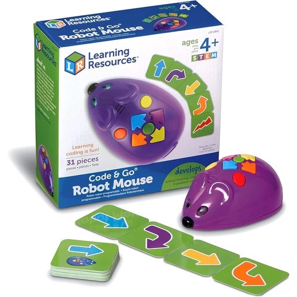

👶 7 años
Learning Resources Robot Mouse
Un ratón robot programable sin pantallas, que se mueve por un laberinto siguiendo las secuencias de tarjetas de codificación. Introduce conceptos de programación básica de forma física y manipulativa.
⭐
¿Por qué nos gusta?
- ✔Aprendizaje de programación sin pantallas.
- ✔Laberinto personalizable con distintos retos.
- ✔Incluye tarjetas de codificación y túneles.
💬
Lo que más destacan las familias
Muchos padres coinciden en que es una forma estupenda de acercar la programación a los niños sin depender de pantallas. Les llama mucho la atención ir cambiando el laberinto para inventar recorridos nuevos.